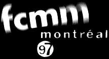
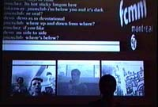

|
 |
|
AudioRom, Media Jam. Performed in Montreal Quebec 97. Festival nouveaux de cinema et nouveaux medias. |
|
This performance uses media such as CUSeeMe, Live internet chat, live FTP (to allow a remote audience to upload images sounds and text) , preauthored images, video together with live audio as a means to create a live media 'Jam' or improvisation. The musical term Jam is used to describe a number of musicians improvising together around specific keys and passages or themes. In this performance the idea of themes and keys are related to content in the form of concepts. The disparate medias are placed together in one large screen space where the participnats on line or at the venue are able to create text images and video that corresponds to each other. This at one end of the scale can produce vibrant forms of narrative. Equally it can produce chaotic data. AudioRom respond during the performance to provide a binding scape of audio in conjunction with the remote visual content. |
|  |